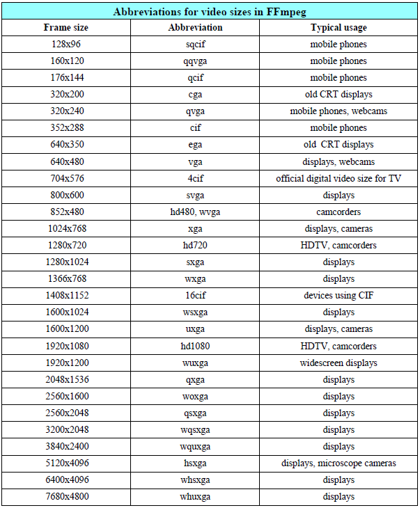
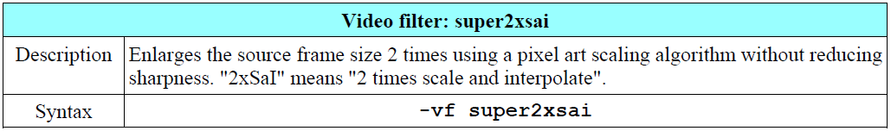
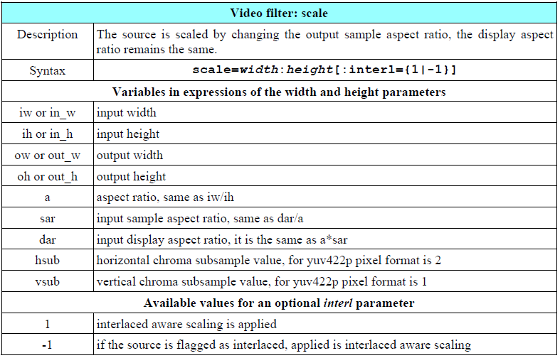

调整视频的尺寸和缩放（ Resizing and Scaling Video ）
调整视频尺寸（resize）在FFmpeg中表示调整它的宽高，缩放（scale）表示使用缩放滤镜调整帧的尺寸。这些操作提供了高级特性。
我们使用
-s命令去调整输出视频的宽高，分辨率使用wxh的输入格式，例如想要调整初始分辨率为320*240，可以使用命令：ffmpeg -i input_file -s 320x240 output_file。预定义的帧尺寸
FFmpeg提供了一些预定义的尺寸，来避免每次都需要输入确切的尺寸值。

按照这些预定义参数，如下两条命令就是等效的：ffmpeg -i input.avi -s 640x480 output.avi和ffmpeg -i input.avi -s vga output.avi。尺寸调节时需要考虑的问题：奈奎斯特采样定理（Nyquist sampling theorem）
视频通常调整为比源文件更小的尺寸，方便移动设备和网络传输等使用。我们需要着重考虑的一点就是：小尺寸通常会丢失一些细节，这就是采样定理。为了不失真地恢复模拟信号，采样频率应该不小于模拟信号频谱中最高频率的2倍。这表示为了保持降阶视频的细节，它的源文件大小必须比缩放比例除以2更高。（这段网上找的定理翻译，英文太专业，看得不是太懂）
那么举个栗子，我们有一个800x600 (SVGA)分辨率的视频，它有一个2px宽的细节，当转换成640x480(VGA)分辨率时，缩放比率是0.8，这个2px的细节再次被转换成2px，计算过程如下：640 pixels / 800 pixels = 0.8，2 pixels * 0.8 = 1.6 ≈ 2 pixels。但是当这个视频转换成160x120 (QQVGA)分辨率时，这个2px的细节就丢失了：160 pixels / 800 pixels = 0.2，2 pixels * 0.2 = 0.4 ≈ 0 pixels。这意味着降阶之后与源文件有着至少3px的可见差。
一些尺寸调整的滤镜
- 特别的放大滤镜（super2xsai）
将视频帧尺寸调大的需求相对较少，因为这个函数支持几乎所有的媒体播放器，但是返回的帧图像有时候不清晰，尤其是当源文件的分辨率非常小的时候。这个能平滑放大源文件的特殊滤镜就是：super2xsai滤镜。

例如，要将一个128x96的视频放大为256x192像素分辨率，可以使用如下命令：ffmpeg -i phone_video.3gp -vf super2xsai output.mp4 - 缩放的特性
当使用-s命令用来调整视频帧尺寸时，实际上一个scale滤镜被插入到相关的滤镜视图之后。为了位置管理，当一个缩放进程开始的时候，scale滤镜能被直接使用。

直接使用缩放滤镜的优势是能够使用上表中的额外描述参数。 如下的两条命令就是等效的：ffmpeg -i input.mpg -s 320x240 output.mp4和ffmpeg -i input.mpg -vf scale=320:240 output.mp4 等比缩放视频
不必知道输入文件帧的大小，我们能通过scale滤镜的iw和ih参数来直接等比缩放输入视频。 例如以下几条缩放指令：1
2
3ffmpeg -i input.mpg -vf scale=iw/2:ih/2 output.mp4 //等比缩放1/2
ffmpeg -i input.mpg -vf scale=iw*0.9:ih*0.9 output.mp4 //等比缩放90%
ffmpeg -i input.mpg -vf scale=iw/PHI:ih/PHI output.mp4 //以黄金比例缩放：PHI=1.61803398874989484820...缩放成预定义的宽或高
当输出视频需要确定的宽或高，且输入视频的尺寸和比例未知的时候，第二个参数能够通过aspect参数指定。 例如，如下指令指定输出宽度为400px，高度等比缩放：ffmpeg -i input.mpg -vf scale=400:400/a；如下指令指定输出高度为300px，宽度等比缩放：ffmpeg -i input.mpg -vf scale=300/a:300 output.mp4。